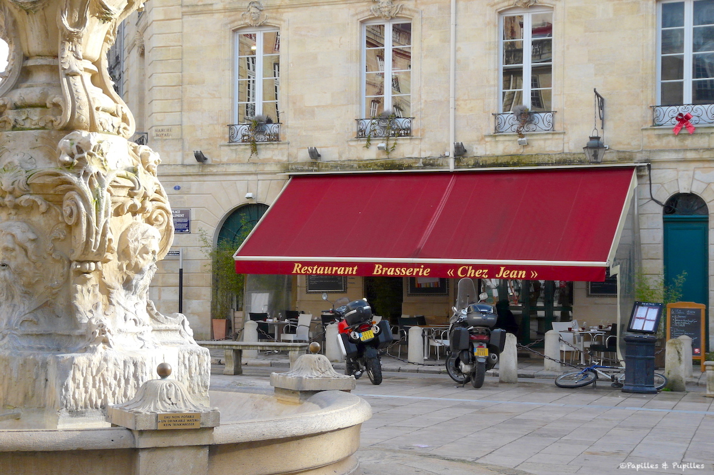

Chez Jean
1 Place du Parlement, 33000 Bordeaux
Dans un décor chaleureux avec banquettes rouges, cette brasserie dotée d'un étage offre une carte classique.
The Golden Apple
46 Rue Borie, 33300 Bordeaux
Ce pub à l'ambiance british propose des soirées à thèmes, des soirées sportives, des bières et des hamburgers.
Le Chapon Fin
5 Rue Montesquieu, 33000 Bordeaux
Dans un décor rocaille Art nouveau, ce spacieux restaurant au style sélect sert des mets français raffinés.
Le Bistrot du Musée
37, place Pey Berland, 33000 Bordeaux
En plein centre-ville de Bordeaux, avec une vue directe sur la cathédrale Saint-André, le restaurant Le Bistro du Musée propose une cuisine traditionnelle où la fraîcheur des produits paraît indiscutable. La décoration intérieure, sur le thème du vin, montre bien l’importance accordée aux bons crus.
Ô p'tit Bahut
10 Rue des Bahutiers, 33000 Bordeaux
Ce restaurant aux pierres apparentes propose des tartines le midi, des planches et un blind taste le mercredi.